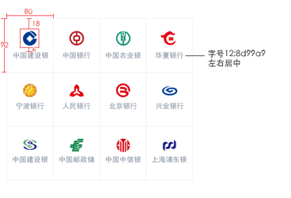
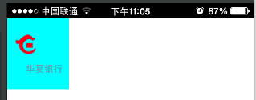
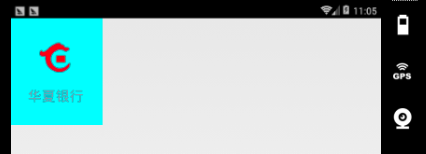
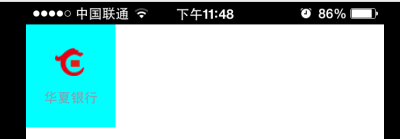

td和div控件都有属性align用于指定其子控件的水平对齐方式。
根据参考手册中描述：水平的对齐是将整个控件区域整体做对齐.
现在5.2版本中ios和android平台在处理div或者td中存在多行内容时有差异，我们先看一下下面的例子。
需要实现效果如下图所示：

实现思路：
先实现九宫格中每一块，然后将这些块分别定位。
实现报文：
实现九宫格中一块，报文为：
<content>
<head>
<style>
.div_coll_default{width:80px;height:92px;background-color: #00FFFF;}
.but_coll_default{width:33px;height:33px;top:18px;}
.but_coll_custom{background-image: url(hx.png);}
.label_coll_default{font-size:12px;color:#8D99A9;}
.label_coll_custom{text-align:center;top:57px;height:18px;}
</style>
<script type="text/x-lua" src="RYTL.lua"></script>
<script type="text/x-lua" src="elements.lua"></script>
<script type="text/x-lua">
<![CDATA[
]]>
</script>
</head>
<body>
<!--menu-->
<div class="div_coll_default,div_coll_custom1" name="div_coll" border="0" align="center" valign="middle">
<input type="button" class="but_coll_default,but_coll_custom" name="hx"
onclick = "coll_click('hx','华夏银行')"/><br/>
<label class="label_coll_default,label_coll_custom">华夏银行</label><br/>
</div>
</body>
</content>


在父控件div的属性中写着align="center" valign="middle",对于没有设置left样式的控件，客户端会自动根据div的宽度和控件宽度计算出子控件居中显示
的位置。
在此报文中设置了父控件div的align属性为center，根据文档描述button和label当作一块区域水平居中。
在IOS平台先计算label位置，由于label有样式text-align:center,那么label相对父控件水平居中，此是label计算位置为水平中心，将此label和button当
作一块区域，此时button为默认居左，label为居中，将这两个控件和为一块水平居中，则出现ios平台展现章节中效果。
在android平台将每个换行控件当作单独一行直接水平居中，则出现android平台展现章节中效果。
在碰到这样的兼容性问题时需要客户端修改布局算法，带来的问题就是只要界面中存在align=center属性的div就得重新测试，这个工作量非常大，所以考虑一种折中办法，
由模版修改为两个平台表现一致从而规避此兼容性问题。
对于此问题的修改为去掉父控件div的align属性，由样式控件button和label的水平居中，所以修改报文为：
<div class="div_coll_default,div_coll_custom1" name="div_coll" border="0" >
<input type="button" class="but_coll_default,but_coll_custom" name="hx" onclick = "coll_click('hx','华夏银行')"/><br/>
<label class="label_coll_default,label_coll_custom">华夏银行</label><br/>
</div>
计算button的left值为 （80-33）/2，对label直接使用text-algin:center样式实现水平居中。
所以样式修改为：
.div_coll_default{width:80px;height:92px;background-color: #00FFFF;}
.but_coll_default{width:33px;height:33px;top:18px;}
.but_coll_custom{left:23px;background-image: url(hx.png);}
.label_coll_default{font-size:12px;color:#8D99A9;}
.label_coll_custom{width:80px;text-align:center;top:57px;height:18px;}
在ios平台展现为：

在ad平台展现为：
两个平台展现一致。